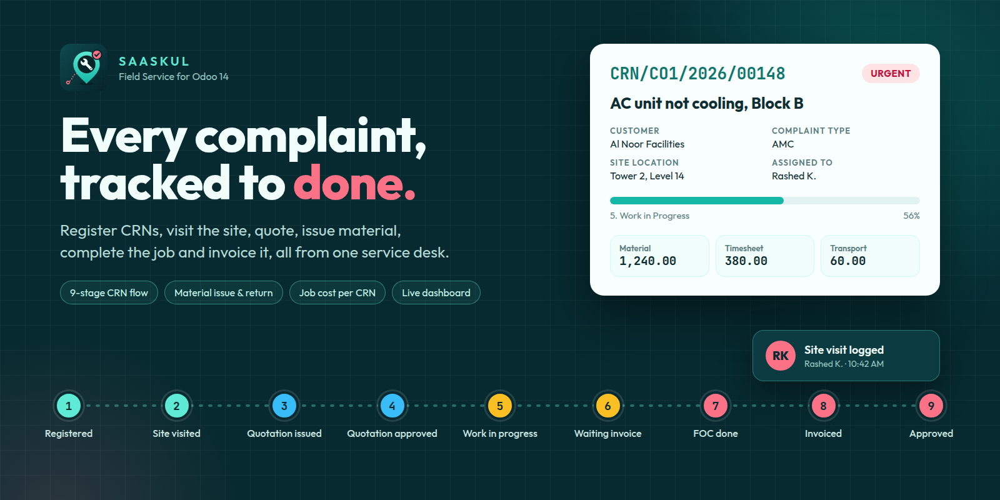
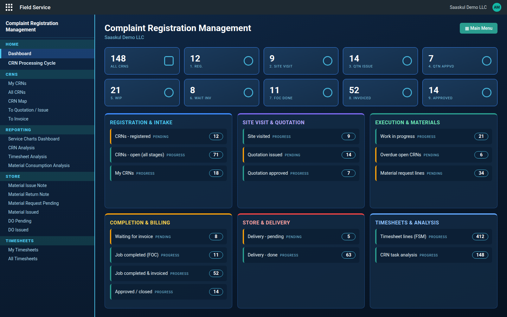
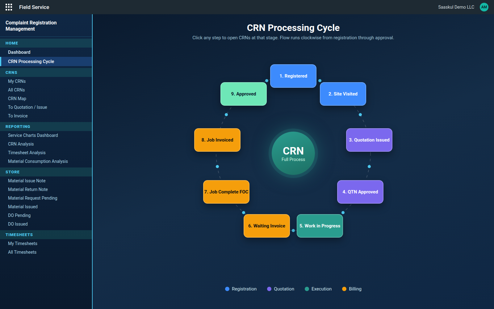
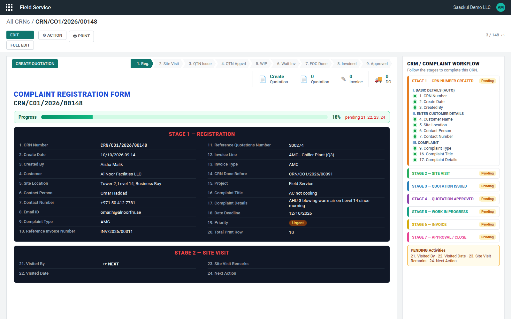
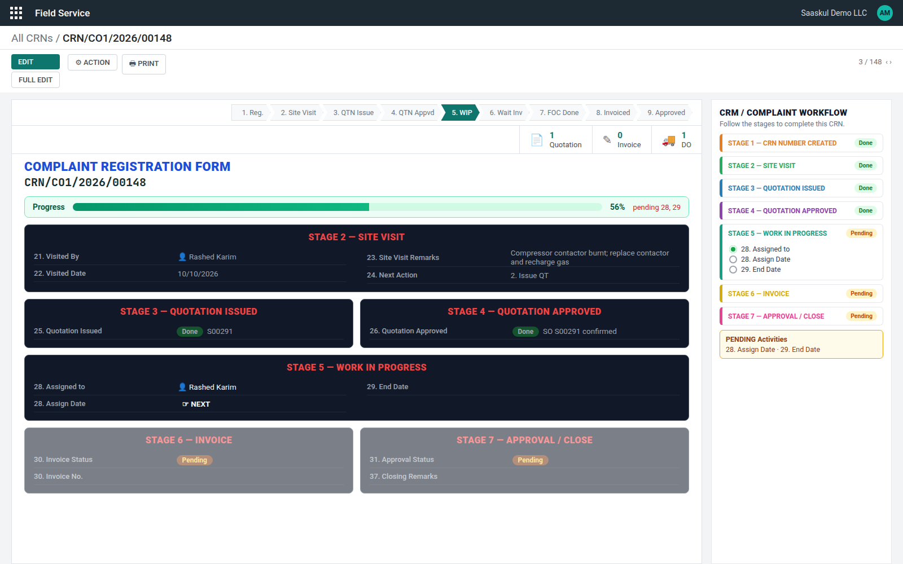
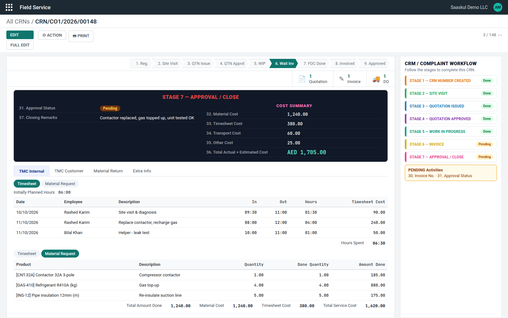
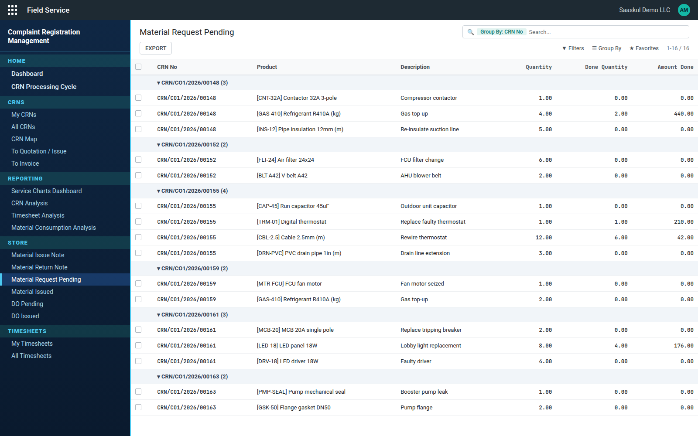
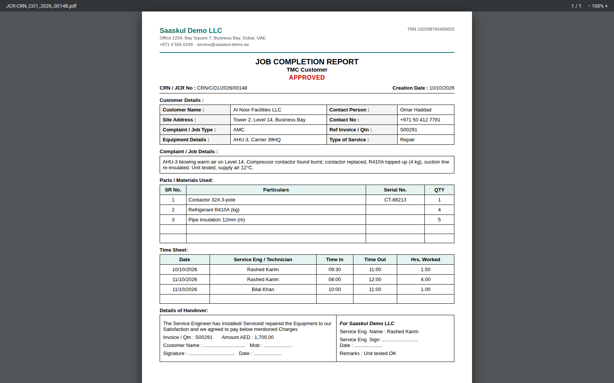
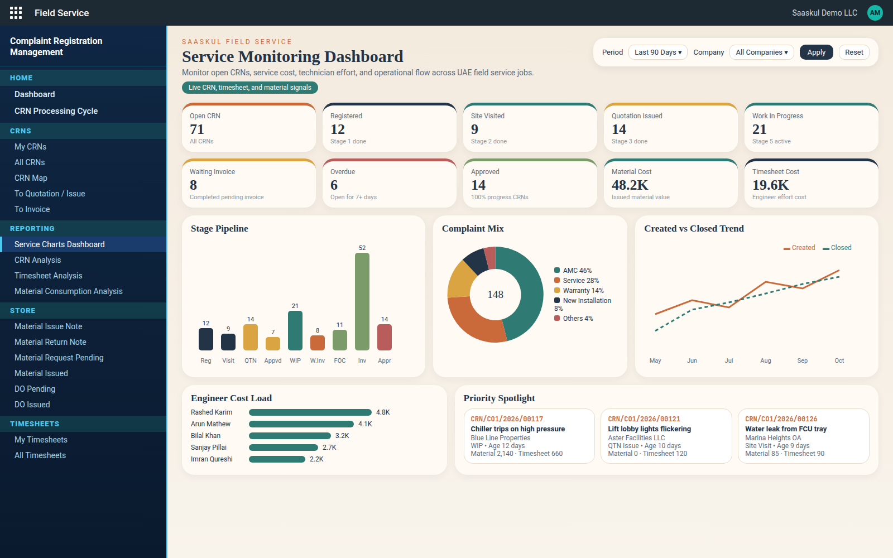
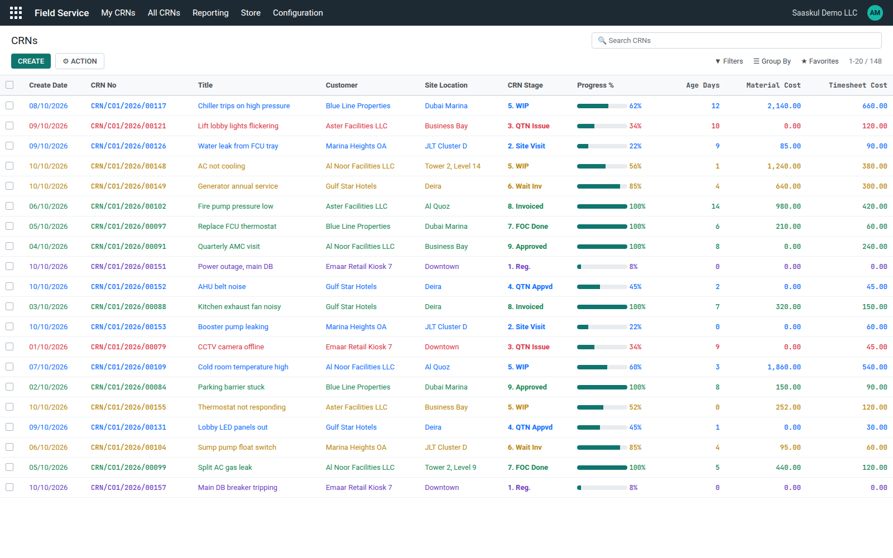

Saaskul Field Service turns Odoo Field Service tasks into Complaint Registration Numbers (CRNs). Register the call, visit the site, quote, issue material, finish the job, invoice it and close it, all on one guided form.
Built for facility management, MEP, HVAC and maintenance companies that run AMC and call-out service jobs.
Follow the 9 stages Ask for a demo
The stage moves on by itself as the site visit is logged, the quotation is sent and confirmed, the work dates are filled and the invoice is posted.
The Field Service app opens on the Complaint Registration Management dashboard, with a sidebar for CRNs, reporting, store and timesheets.

Dashboard. A count for every stage, plus panels for intake, quotation, execution, billing, store and timesheets. Click any number to open that list.

CRN Processing Cycle. The nine stages on a clockwise ring, coloured by phase. Click a stage to open its CRNs.

Field 24 decides where the CRN goes.
1. Closed 2. Issue QT 3. FOC
The Quotation, Invoice and DO buttons on top of the form open the documents linked to the CRN.


| TMC Internal | Your own record of parts and engineer hours. |
| TMC Customer | The copy the customer signs at handover. |
Customer details, complaint and job details, parts used with serial numbers, the time sheet, and a handover block with signatures for the customer and your company. The number of table rows is set per CRN.

Stage pipeline, complaint mix, created vs closed trend, engineer cost load and the oldest open CRNs, filtered by period and company.

Progress %, age in days, material and timesheet cost on every row.

| Odoo | 14.0 Enterprise |
| Enterprise apps | Field Service (industry_fsm, industry_fsm_report, industry_fsm_sale), Planning / Forecast (project_forecast), Timesheets (timesheet_grid) |
| Standard apps | Sales Timesheet, Sales Stock, Inventory, Purchase |
| Other modules | None. No third-party apps needed. |
Write to us and we will set up a demo or help you install it.
info.cpabooks@gmail.com WhatsApp +971 56 256 8128